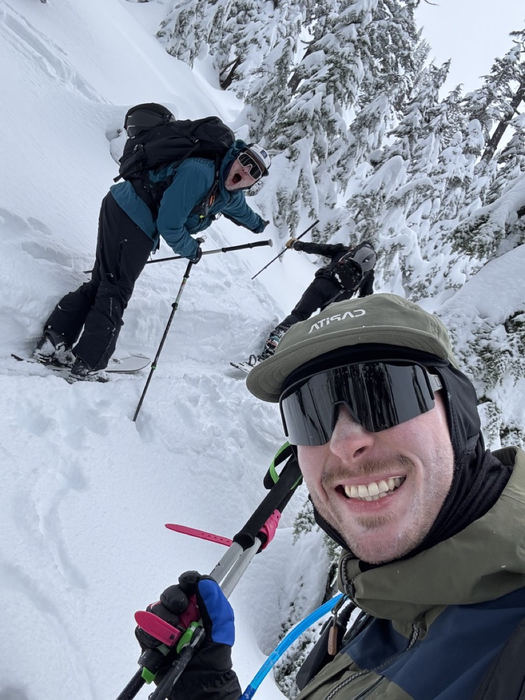
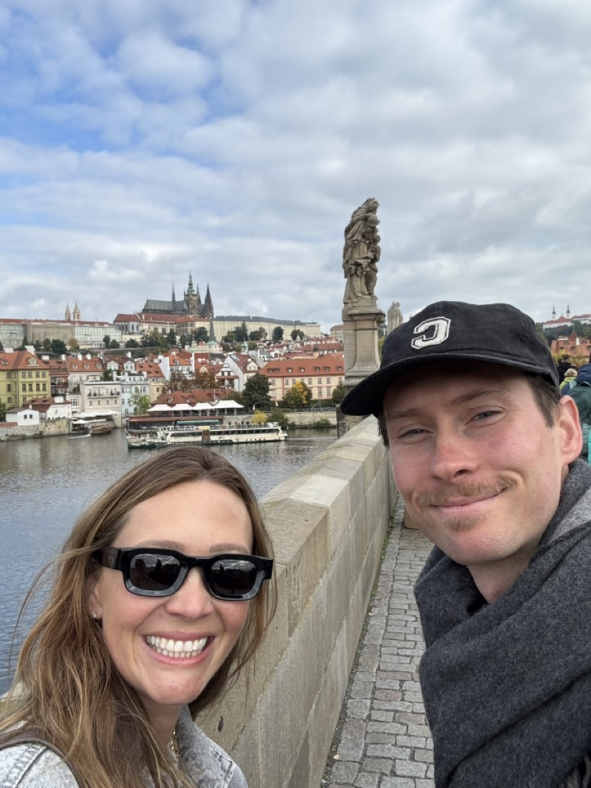
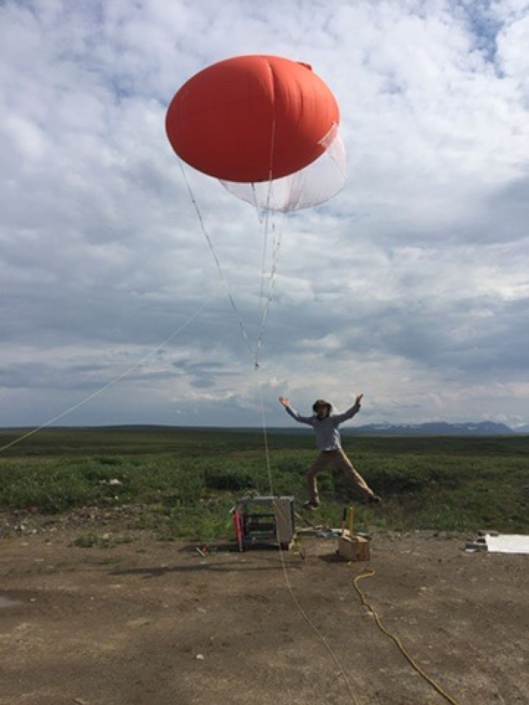
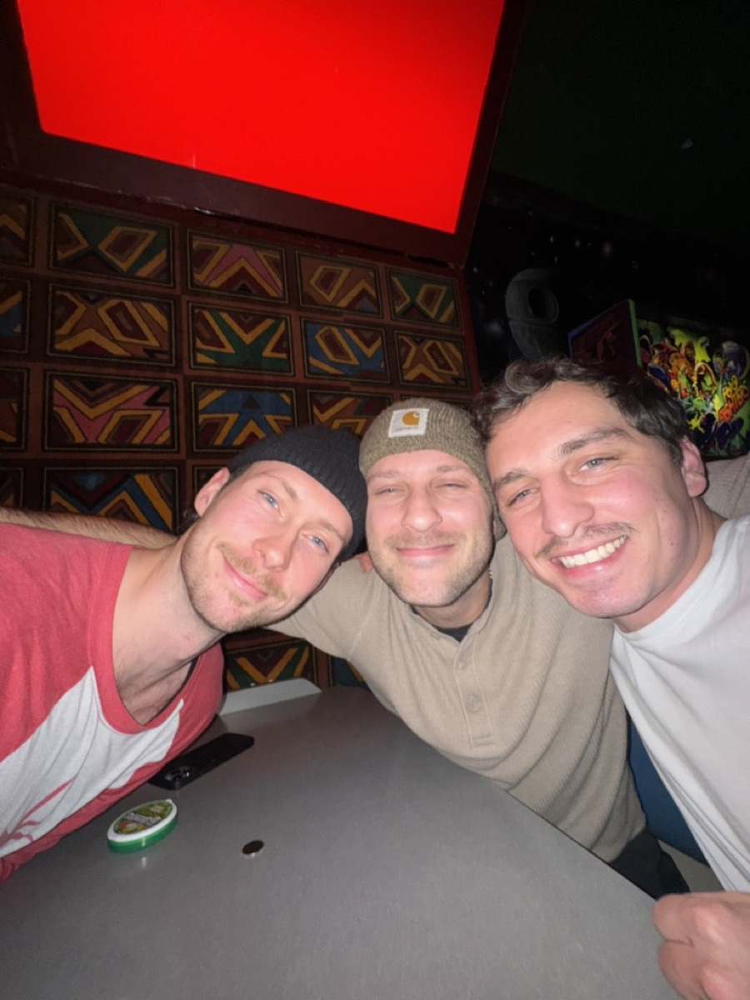
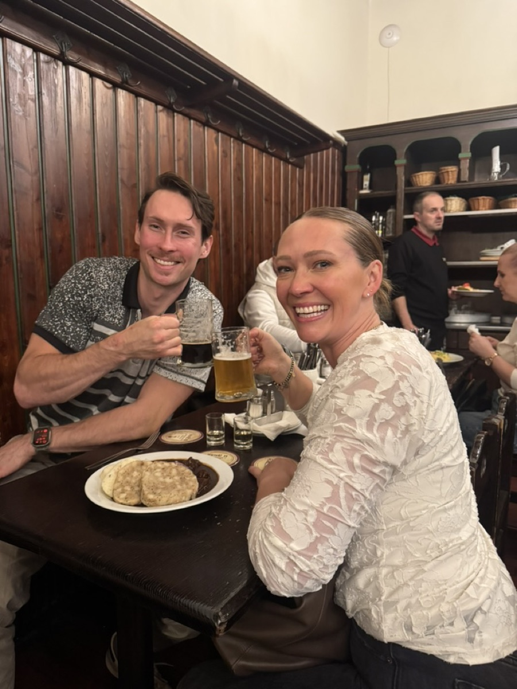

Who I am
A builder with a writer's mind.
I started in science at CU Boulder — a neuroscience lab, then Arctic atmospheric research with a co-authored paper in Biogeosciences. From there I spent years as the person who makes complex systems make sense: technical writer at Google, digital product manager, then technical writer at Microsoft on HoloLens, Mixed Reality, and Mesh.
In late 2024 I stopped documenting other people's systems and joined QuarterSection as its fourth partner — the one who builds. My three co-founders bring the vision, the industry depth, and the connections; I turn it all into a working product. Every layer is mine — nightly ETL pipelines, the SQL estate, the APIs, the React frontend, the cloud infrastructure, the docs — plus a portfolio of my own products and client work.
I think in systems, I document like it's a love language, and I'd rather build the thing than buy it.
Founder mode — est. 2024
Flagship build
QuarterSection
Oklahoma mineral rights intelligence — deep data, made human.
Hundreds of thousands of people own the oil and gas underneath Oklahoma — and most of them can't see what's happening down there. The data exists, but it's scattered across slow government databases and written in century-old legal jargon.
QuarterSection pulls it into one place: your wells on a map, your production history, your paperwork — clean, fast, and priced for a person instead of a corporation. It competes on depth with platforms built by entire engineering departments, at a fraction of their price.
Three co-founders, one builder. My partners steer what mineral owners and operators need, carry the legal side, and open doors. I make it real — data engineering, backend, frontend, DevOps, security, product, design — every line of code and every daily decision.
- A fleet of nightly scrapers and ETL pipelines that crawl state and county records with zero human in the loop
- Entity resolution reconnecting financial records to physical wells the government never gave a shared ID
- An AI document pipeline that reads scanned legal PDFs and extracts the facts
- A ~100-table Azure SQL estate that rebuilds itself nightly with zero downtime
- Data-quality systems that auto-flag impossible values before users ever see them
One builder, every layer — competing with billion-dollar incumbents on data depth, and beating them on clarity and price.
More builds
Products and client work shipped alongside the flagship — same playbook, different domains.
The Stack Map
The AI tools landscape, mapped. An interactive library of 156+ tools and 31 real workflows — not just what each tool does, but how they connect in practice. Includes a stack-builder quiz that recommends tools for how you actually work.
Explore the mapOutdoor Hub
Every condition, one dashboard. Real-time weather, snow, trail, water, and road data unified from NOAA, USGS, state DOTs, and avalanche centers — 11+ activity dashboards across the American West, so you check one site instead of six agencies.
Check conditionsdügood
Main-street AI modernization. Ongoing consulting for a Seattle junk removal & donation pickup company — including a real-time Google Reviews engine I built for their Squarespace site, streaming a live 5.0★ rating across 150+ reviews straight onto the page.
See it liveI do this for other businesses too.
QuarterSection taught me how to be a company's entire product and engineering org in one person. dügood proved the same playbook works for main-street businesses: a modern web presence, automated workflows, and AI where it actually earns its keep. If your business runs on software from 2012, I can fix that.
The path here
Co-founder & sole builder · QuarterSection
Joined three co-founders as the fourth partner — the one who executes. Turned their vision into a statewide oil & gas data platform, built end to end by me (~$200K raised).
Technical Writer I & II · Microsoft
HoloLens, Mixed Reality, and Mesh. Architected docsets across Microsoft Learn and Support properties serving 140K+ page views a month; built internal tooling on Power Platform and Azure DevOps.
Digital Product Manager · Privacy Co.
Owned digital product experience and delivery for a privacy-focused company.
Technical Writer · Google / Content Manager · Publist
Developer-facing documentation at Google; content systems at a startup.
Head Writer · FutureScope
Led writing for a futurism startup translating emerging-tech trends for a general audience.
Research · Neuroscience & the Arctic
Neuroscience addiction lab; atmospheric field research above the Arctic Circle with CU Boulder's Institute of Arctic and Alpine Research — co-author in Biogeosciences (2020).
Writing
Writing is how I think. Long-form pieces on AI-assisted engineering, agents, and what building alone actually teaches you.
The Operating System Around AI Coding
16 months of Cursor workflow patterns that actually stuck.
Agentic Observability: The Answer
What it takes to actually see what your AI agents are doing.
Vibe Coding Lessons with Cursor
Lessons from vibe coding at scale with a burgeoning codebase.
Off the clock
The work is only half the story. I'm happiest in motion — splitboarding into untracked snow, standing on summits I had to earn, wandering cities I can't pronounce. I cook constantly and too much, mostly for the people I love. Family and friends aren't what's left over after the work — they're the reason for it.





Let's build something.
Founders, operators, and small businesses — if you have a messy domain that needs to become a working system, I'd like to hear about it.
tylerpridemilligan@gmail.com